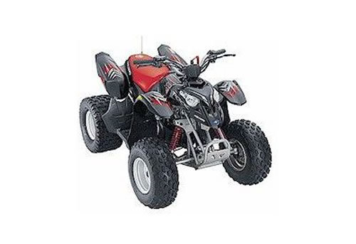
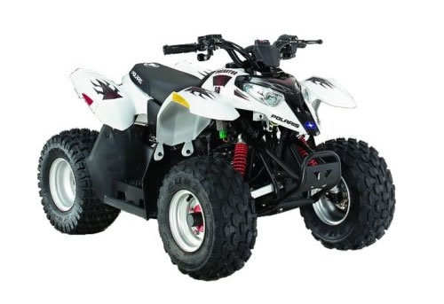

| Polaris Predator 50 / Outlaw 90 / Sportsman 90 service manual 2004 | |
 |
Instant download of the factory repair manual for the 2004 Polaris Predator 50, Polaris Predator 90 and Polaris Sportsman 90 two-stroke youth atvs. 103 pages. |
 |
| Polaris Predator 50 / Predator 90 / Sportsman 90 service manual 2006 | |
 |
Instant download of the factory repair manual for the 2006 Polaris Predator 50, Predator 90 and Sportsman 90 two-stroke youth atvs. This was the last year these had two-stroke motors. 126 pages. |
|
| Polaris Predator 50 / Outlaw 90 / Sportsman 90 service manual 2007 | |
 |
Instant download of the factory repair manual for the 2007 Polaris Predator 50, Polaris Outlaw 90 and Polaris Sportsman 90 four-stroke youth atvs. This was the first year these had four-stroke motors. 170 pages. |
|
| Polaris Predator 50 / Outlaw 90 / Sportsman 90 service manual 2008 | |
 |
Instant download of the factory repair manual for the 2008 Polaris Predator 50, Polaris Outlaw 90 and Polaris Sportsman 90 four-stroke youth atvs. 178 pages. |
|
| Polaris Predator 50 / Outlaw 90 / Sportsman 90 service manual 2009 | |
|
Instant download of the factory repair manual for the 2009 Polaris Predator 50, Polaris Outlaw 90 and Polaris Sportsman 90 four-stroke youth atvs. 170 pages. |
|
| Polaris Predator 500 service manual repair 2003-2007 | |
| Instant download of the factory repair manual for the 2003-2007 Polaris Predator 500 atv. This is the 2003-2004 and 2007 manuals combined into one. Doesn't specifically cover 2005-2006 models but the 2007 manual can be used for those years. 372 pages. | |
|